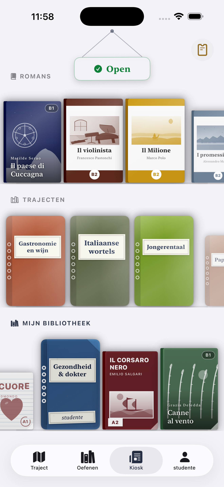
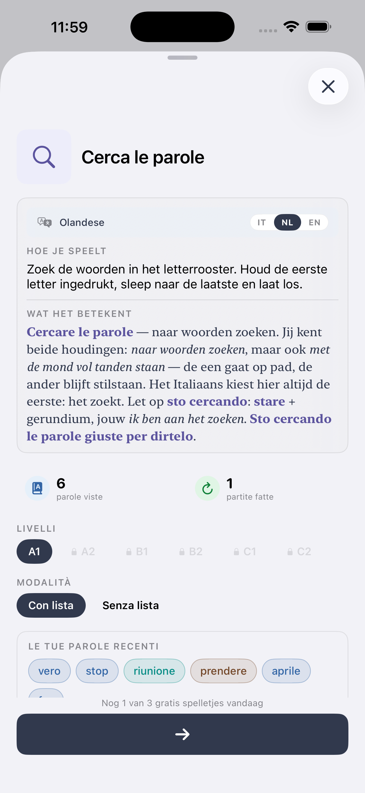
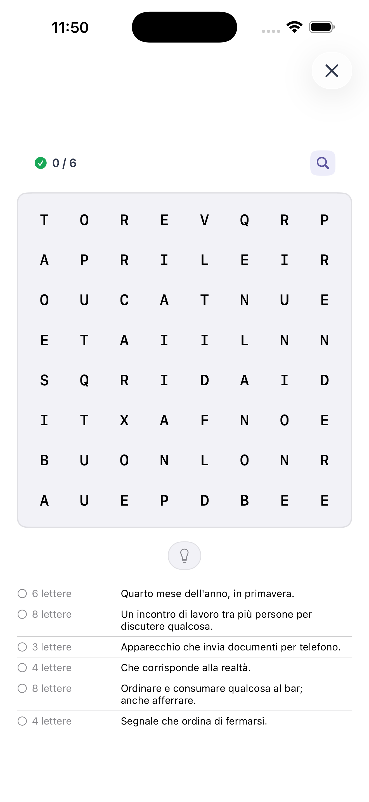
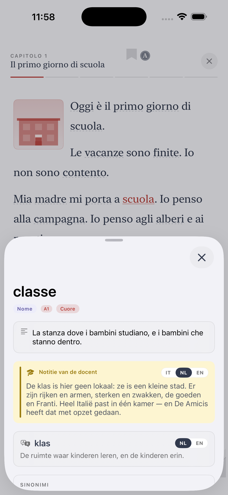
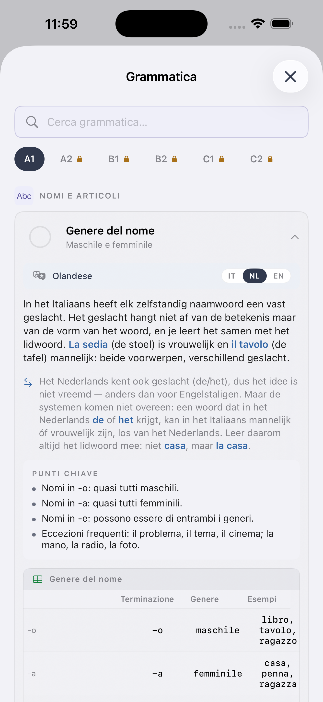

Ik hou van je, ik leer je.
Italiaans voor absolute beginners.
Je hebt besloten Italiaans te leren. Mooi. Hier is wat je in je eerste maand echt moet doen, plus de 50 woorden en zinnen die 80% van dagelijkse situaties dekken.
Begin bij de klanken, niet bij grammatica
Italiaans is een van de meest fonetisch consistente Europese talen: wat je ziet, zeg je (bijna) zo. Wijd je eerste week aan uitspraak, voordat je aan grammatica komt.
- Klinkers — a, e, i, o, u — altijd hetzelfde. Geen stomme letters.
- Dubbele medeklinkers — casa (huis) vs cassa (kassa). Verdubbeling is echt; je moet het horen én zeggen.
- Klemtoon — meestal op voorlaatste lettergreep (ca-sa). caf-fè met accent op einde is de uitzondering.
De 15 zinnen van elke dag
- Buongiorno — Goedendag (tot ~17u).
- Buonasera — Goedenavond.
- Ciao — Hoi / dag (informeel).
- Grazie — Dank je.
- Prego — Alsjeblieft / graag gedaan.
- Scusa / Scusi — Sorry / pardon.
- Per favore — Alstublieft.
- Sì / No — Ja / nee.
- Non lo so — Ik weet het niet.
- Non capisco — Ik begrijp het niet.
- Parli inglese? — Spreek je Engels?
- Come stai? / Come sta? — Hoe gaat het? (informeel / formeel).
- Sto bene, grazie — Het gaat goed, dank je.
- Quanto costa? — Hoeveel kost het?
- Il conto, per favore — De rekening, alstublieft.
De 35 woorden die alles openen
Leer deze zelfstandige naamwoorden, werkwoorden en voorzetsels en je bouwt honderden zinnen.
- Zelfstandige naamwoorden: casa, lavoro (werk), cibo (eten), acqua, caffè, giorno, tempo, treno, strada, amico, bambino, famiglia, città.
- Werkwoorden: essere (zijn), avere (hebben), fare (doen), andare (gaan), venire (komen), volere (willen), potere (kunnen), dovere (moeten), mangiare (eten), bere (drinken), capire (begrijpen), parlare (spreken).
- Voorzetsels: di, a, da, in, con, per.
- Vraagwoorden: che, chi, come, dove, quando, perché.
Ti dekt precies deze woorden
Het A1-pad in Ti leert je deze woordenschat in context, met audio en spellen. In het Nederlands.
Starten met Ti op iOS →Realistisch plan voor de eerste maand
- Week 1 — Klanken en de 15 dagelijkse zinnen. Hardop zeggen.
- Week 2 — Tegenwoordige tijd van essere, avere, chiamarsi. Stel jezelf voor in het Italiaans.
- Week 3 — Bestellen in café, weg vragen, menu lezen.
- Week 4 — Getallen, dagen, tijd, afspraak maken.
Aan het eind van maand één zou je een korte, ongemakkelijke, echte conversatie met een Italiaan moeten kunnen hebben. Dat is het doel — ongemakkelijk maar echt. Perfectie komt later.
De app die jouw taal spreekt
Ti gidst je door Italiaans vanaf A1 in het Nederlands. iOS, gratis om te beginnen.
See Ti in action
The CEFR path, exercises, edicola and graded Italian classics — from A1 to C2, in 14 languages.






